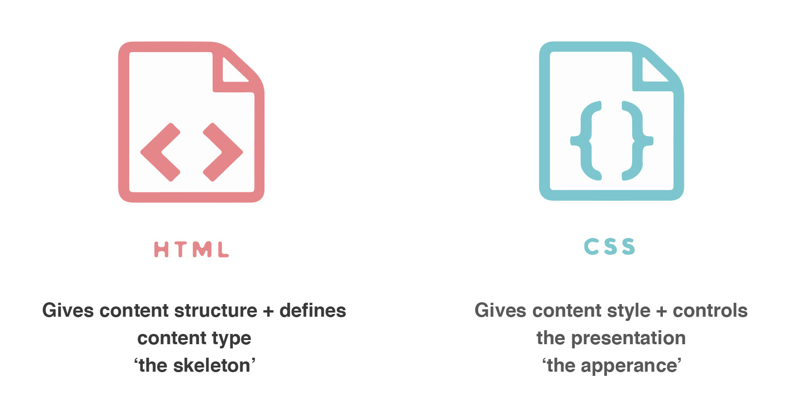
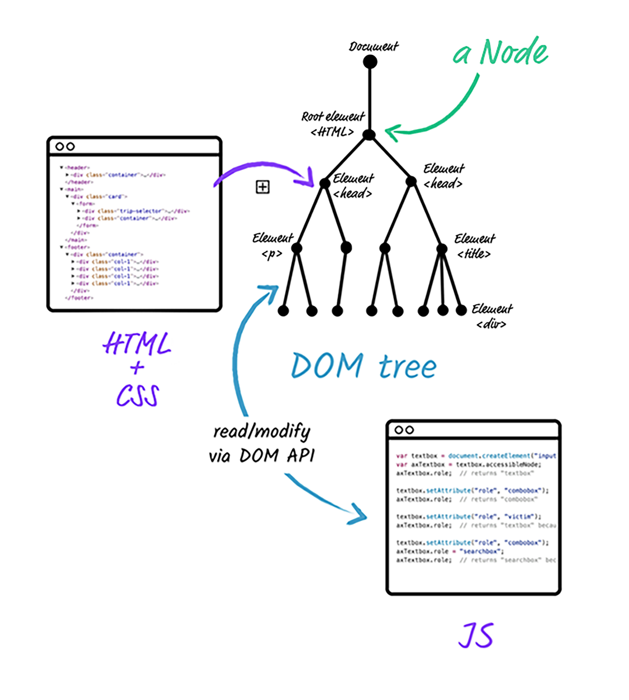

HTML defines the overall structure and elements of the web page and CSS defines the visual style. This allows you to have structure/content and presentation seperate from each other. When HTML and CSS talk together you get a webpage that is ideally well structured and looks great! You’re able to maintain and update these two sides of your webpage seperately. To get HTML and CSS to talk you add a link to your HTML so it knows to refer back to the CSS stylesheet you’ve supplied.
HTML is like the builder, makes sure everything is in it’s place and built well. Then the CSS interior designer walks in and chooses colours, tones, textures, placement of elements, just to name a few.
The Document Object Model (DOM) lets you access web documents and browser elements. It’s the equivalent of a map for your HTML, CSS and browser. The map is a guide. You're able to find and track code, understand what the code is doing, and provides the ability to make changes directly within the DOM. Like a giant magnifying glass, the DOM goes in deep, looking at all parts of your webpage and browser.
Moving through the DOM is called traversing through the 'DOM tree'. A tree-like structure that keeps the logical parent, child, sibling relationships within the code. Every element in a document is called a node—the document as a whole, the head, tables within the document, table headers, text within the table cells—is part of the document object model. The DOM can be manipulated with scripting languages like JavaScript. When you modify the DOM you're able to see the results immediately.

Control flow is the order in which the computer executes statements in a script. There is an order that the script has to follow. Once this part is done we can
move onto the next, then the next then the next. Similar to when you wake up, you get dressed, you have breakfast, you leave the house. There is an order of events that
happen to get you out the door. Loops are one aspect of the control flow. Loops allow programmers to shorten code,
what might be lots of lines of code is now written once and repeated as many times as needed. A loop in simple terms
is a repeat.
The “Go put your pyjamas on please” loop.
My everyday example of control flow and loops would be when I ask my lovely children to get ready for bed. There are steps that need to happen through the day to get
from point A to point B. “Go put your pyjamas on please,” I ask once,
they listen but no one moves a muscle. “Go put your pyjamas on please,” I ask twice, they listen again but nothing
changes. I ask again “Go put your pyjamas on please” I might get a slight bit of movement, but still I'm not seeing the results I need.
I repeat my phrase “Go put your pyjamas on please”, sounding like a broken record I’m losing patience. “Go put your pyjamas on please”
I finally see movement and children appear back in front of me in bed attire. Now that I see pyjamas on children the situation
has changed and I can stop asking. Once this task is completed we can move onto the next steps, the goal being sleep.
There are three types of loops;
The for loop, the while loop, and the do…while loop. Each runs slightly differently but a condition must be set for each so that when the loop evaluates to false the loop stops.
In my case the situation changed, I saw pyjamas on children so I stopped my loop. If you don’t set a condition the code will be caught in an infinite loop.
“Go put your pyjamas on please”. “Go put your pyjamas on please”. “Go put your pyjamas on please”. “Go put your pyjamas on please”.
“Go put your pyjamas on please”. “Go put your pyjamas on please”. Me on repeat, no thanks!
An array is a series of containers that function as a whole placed inside [ ] square brackets. Like a lunch box, with different compartments holding
different food items, grapes in one part, sandwich in another compartment, some crackers in the next. An array keeps all the items together and ordered.
Arrays can store many things at once inside them, strings, numbers, boolean, or even another array.
Using an array we have the ability to store and retrieve things within the subcompartments, which are called elements. Accessing data from an array
can be done using the index position. This position refers to a memory address in which the
value is saved. Arrays always start at 0, so no.1 in the list looks like this [0]. So in my lunch box array let lunchbox = ['grapes', 'sandwich, 'crackers']
I want to know the first item in my lunchbox
I use the index to help let first = lunchbox[0] which is grapes.
Objects store data in key-value pairs and they are accessed by their names not numerically. A key value and property example the object might be person,
the person is defined by
name: "Frances", dog: "poodle", car: mini. We access the data from objects by using the . syntax and the square brackets property. Objects are similar
to dictionaries, storing data we can access. Here is my example with the lovely Frances, it shows both the .syntax and square brackets to get retrieve her name.
var person={
name : 'frances'
dog : 'poodle'
car : 'mini'
}
person.name or person['name']
Answer is 'frances'